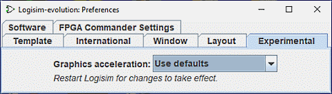

实验选项卡

这些首选项启用了被视为实验性的功能，并插入这些功能以获取用户反馈。
- 图形加速： 一位 Logisim-evolution 用户观察到，在命令行中添加 -Dsun.java2d.d3d=True 似乎可以通过告诉 Logisim-evolution 使用硬件图形加速来提高 Logisim-evolution 的图形性能。 此下拉框尝试配置 Logisim-evolution 来进行设置； 关于此下拉框是否对性能有任何影响的报告将受到欢迎。 重新启动 Logisim-evolution 后不会产生任何影响。
下一步： 命令行选项 。